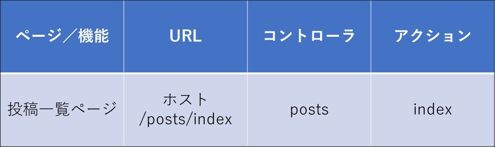

投稿一覧ページ
制作イメージ
投稿一覧ページを作成してください。
投稿一覧ページ

◆投稿データを格納するデータベースを準備してください。その際、テーブル名は「Post」、投稿データのカラム名は「content」、投稿データのデータ型は「text型」としてください。
◆「rails console」を使用して任意の投稿データをいくつか作成し、データベースへ保存してください。
◆上記で作成した投稿データを、投稿一覧ページへ表示してください。
◆投稿データ表示には、変数及びスクリプトレット（<% %>, <%= %>）を使用してください。
◆投稿データ表示には、each文を使用してください。
◆ビューで使う変数は、コントローラのアクション内で定義してください。
◆TOPページ、アプリ概要ページ、投稿一覧ページの共通レイアウト（headerブロック）を纏めてください。
◆画面上の右上のメニューブロックに、「投稿一覧」のリンクを追加してください。
◆画面上の「TweetApp」、「TweetAppとは？」、「投稿一覧」のリンクには、「link_to」メソッドを使用してください。
◆HTML/CSSは下記ファイルをベースとして使用してください。
◆URL、コントローラ名、アクション名は下記のルーティング表に従って作成してください。
・HTML/CSSダウンロード
ルーティング表
